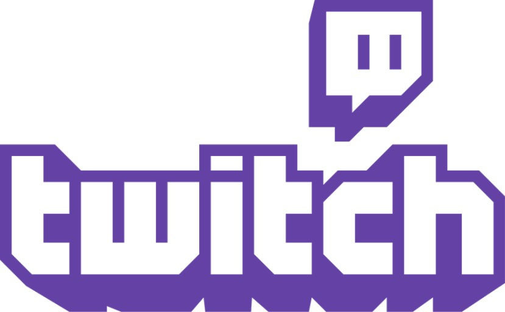

유투부
트위치
유튜브란
유튜버
유튜브 알고리즘
트위치
트위치란

여기
는 트위치 주소이다.
트위치
는 미국 아마존 트위치 사의 인터넷 방송 중계 서비스.
전 세계 최대의 인터넷 방송 플랫폼이다. 외국에서 신작 게임이 나오면 99% 트위치에서 방송을 한다.
인터넷 트래픽 정보 제공 사이트인 시밀러웹 기준, 한달 평균 9억명 이상의 방문자를 기록하고 있다.